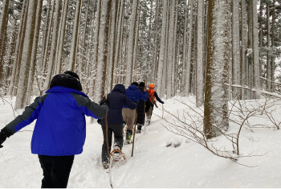

イベント
秋田の季節ごとに行われるお祭りや催しは、地域の伝統や人々の熱気を感じられる特別なひととき。ここでは、秋田ならではの魅力的なイベントをご紹介します。

【秋田・白神山地】森のプロがご案内・白神スノートレッキング！
【秋田冬アソビ割】クーポンコード「6AKC」使用で50％オフになるキャンペーン実施中！ 白神山地を知り尽くした斎藤栄作美ガイドの案内による世界遺産「白神山地」の麓でのスノーシュートレッキングが体験できます！ ６歳からご参加いただけるので、お子様との思い出づくりにもおすすめです。
秋田犬とのふれあい＆温泉コーヒーを楽しむ【大館市】
大館市のふるさわおんせんでは、秋田犬の「はるちゃん」と「はなちゃん」が出迎えてくれます！ 秋田犬とのふれあい＆源泉ドリップの温泉コーヒーを楽しむ体験メニューがありますので、ぜひ、お問い合わせください。
大館地大根漬け物づくり体験（陽気な母さんの店）【大館市】
種取り、収穫、干し大根づくり等季節の作業を体験し、地元農家のお母さんから、地大根の歴史・ストーリーや思い出話を聞く体験です。
- 1
- 2
- 3